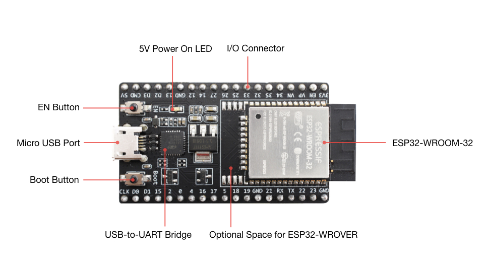
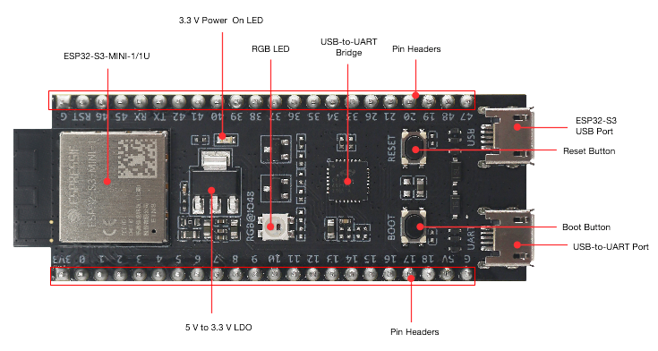
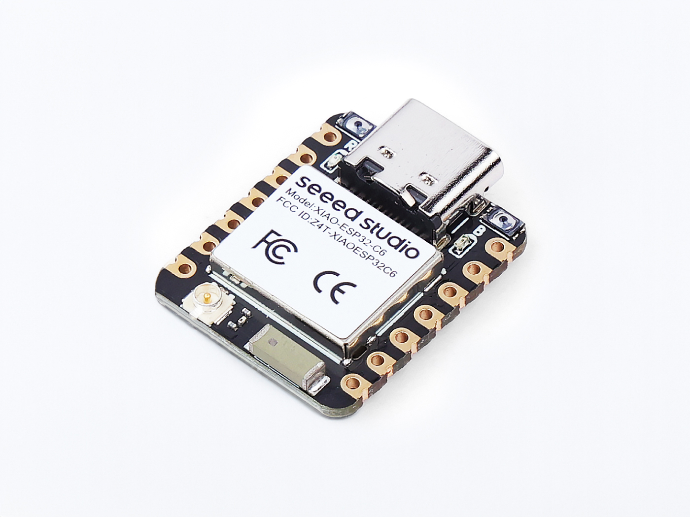

📖 Technical Guide
Detailed protocol and configuration reference.
Quick Start
Flash firmware via browser — no tools needed
Go to Quick Start →Browser-based WebSerial installer with chip selector
📖 Technical Guide
3. Protocol Reference
▼Protocol Auto-Detection
On boot, the ESP DRONE REMOTEID listens to the UART for 50 ms and identifies the protocol by looking for specific headers. The detection logic runs in this priority order:
flowchart TD
Start["Boot / Reset"]
Listen["Listen UART 50 ms"]
MAVLink{"0xFE or 0xFD?
MAVLink v1/v2"}
MSP{"$M< or $M>?
MSP v1 header"}
NMEA{"$G prefix?
NMEA 0183"}
MAV_OK["✅ MAVLink
Store: protocol=1"]
MSP_OK["✅ MSP
Store: protocol=2"]
NMEA_OK["✅ NMEA
Store: protocol=3"]
Main["Run main loop"]
Start --> Listen
Listen --> MAVLink
MAVLink -->|Yes| MAV_OK
MAVLink -->|No| MSP
MSP -->|Yes| MSP_OK
MSP -->|No| NMEA
NMEA -->|Yes| NMEA_OK
NMEA -->|No| Main
MAV_OK --> Main
MSP_OK --> Main
NMEA_OK --> Main
Once detected, the protocol is stored and used until the next reboot. You can force re-detection by resetting the ESP32.
MAVLink (ArduPilot)
The firmware parses the following MAVLink v1/v2 messages (dialect: ardupilotmega):
| Message | ID | Data Used | Frequency |
|---|---|---|---|
GLOBAL_POSITION_INT | 33 | Latitude, longitude, altitude (MSL + relative), heading, relative alt | ~5 Hz |
GPS_RAW_INT | 24 | Latitude, longitude, altitude (MSL), ground speed, satellites, fix type | ~5 Hz |
VFR_HUD | 74 | Ground speed, heading, altitude (baro), climb rate | ~5 Hz |
ATTITUDE | 30 | Roll, pitch, yaw (heading) | ~10 Hz |
AHRS2 | 234 | Secondary heading (ArduPilot), used as fallback | ~5 Hz |
HEARTBEAT | 0 | System ID, vehicle type (for auto-detection) | 1 Hz |
SYS_STATUS | 1 | Battery voltage, error flags | ~1 Hz |
OPEN_DRONE_ID_LOCATION | 12915 | Pre-encoded ODID location (lat/lon/alt/alt_baro/vel/heading) | ~1 Hz |
OPEN_DRONE_ID_BASIC_ID | 12900 | UAS ID, ID type, UA type (overrides config identity) | ~1 Hz |
OPEN_DRONE_ID_OPERATOR_ID | 12905 | Operator ID from ground station | ~1 Hz |
OPEN_DRONE_ID_SYSTEM | 12904 | Operator location (GPS fallback when FC has no fix) | ~1 Hz |
The MAVLink parser handles both v1 (0xFE start byte) and v2 (0xFD start byte) protocols. The system ID from the first HEARTBEAT message is used if mavlink_sysid = 0 (auto-detect). ODID messages override the config identity for compatibility with ArduPilot's native Remote ID support.
MAVLink Configuration Tips
- Set the baud rate to match your ArduPilot serial port (57600 is common).
- If using MAVLink v2, ensure the port is configured for MAVLink1 or MAVLink2.
- The firmware only listens — it does not send any MAVLink messages, so it will not interfere with your existing telemetry link.
MSP (Betaflight / INAV)
The firmware parses the following MSP v1 messages:
| Message | ID | Data Used | Notes |
|---|---|---|---|
MSP_RAW_GPS | 106 | Latitude, longitude, altitude, speed, ground course, satellites, fix type | Primary GPS data source |
MSP_ATTITUDE | 108 | Roll, pitch, yaw (heading in degrees) | Heading for ODID message |
The MSP parser expects the standard MSP v1 framing: $M< header, size byte, command byte, data payload, checksum. It does not require sending any request to the FC — it passively listens to the FC's MSP response stream (typically from the FC's telemetry output).
MSP Configuration Tips
- Enable MSP on the desired UART in the Betaflight Configurator Ports tab.
- Set baud rate to match (57600 is common for MSP).
- INAV sends MSP_RAW_GPS automatically at ~5 Hz when armed.
- Betaflight may require setting
serialrx_provider = MSPfor continuous GPS output.
NMEA 0183
The firmware parses the following NMEA 0183 sentences:
| Sentence | Type | Data Used |
|---|---|---|
$GPGGA | Global Positioning System Fix Data | Latitude, longitude, altitude (MSL), fix quality (0/1/2), satellites, HDOP |
$GPRMC | Recommended Minimum Specific GNSS Data | Speed over ground (knots → m/s), ground course, date, status (A=valid) |
$GPVTG | Course Over Ground and Ground Speed | Ground speed (km/h → m/s), course over ground (true) |
The NMEA parser handles both $GP (GPS) and $GN (GNSS) prefixes. It uses the AIVDM checksum validation and silently discards malformed sentences.
NMEA Configuration Tips
- GPS modules typically output NMEA at 9600 or 115200 baud. Set the baud rate accordingly.
- The NMEA mode requires the 1 kΩ series resistor on the TX tap line (see Hardware section).
- NMEA mode works with any GPS module: BN-880, BN-220, M8N, M10, NEO-6M, NEO-8M, and many others.
- The ESP32 can share the GPS TX line with the FC — the resistor prevents the ESP32's input capacitance from degrading the signal to the FC.
4. Installation Methods
▼Method 1: WebSerial (Browser) — Recommended
The easiest method. Requires Chrome or Edge on Windows, macOS, or Linux. No Python or toolchain needed.
- Connect the ESP32 to your computer via USB.
- Install the CP2102 or CH340 driver if prompted (Windows usually auto-installs).
- Click the install button in the left column of this page.
- A browser dialog will appear showing available serial ports. Select your ESP32 (usually labeled
CP2102 USB to UART BridgeorCH340). - Click Connect. The firmware will download and flash automatically.
- Wait for the progress bar to complete and the "Done" message.
- Disconnect USB and power the ESP32 from your flight controller's BEC or a USB power bank.
localhost or enable HTTPS.Method 2: ESP-IDF (Manual Build)
For developers or users who want to customize the firmware.
Prerequisites
- ESP-IDF v6.0.1 installed at
C:\esp\v6.0.1\esp-idf(Windows) or$HOME/esp/v6.0.1/esp-idf(Linux/Mac) - Python 3.10+
- Git
Build Steps
git clone https://github.com/VOLTEKOVER/ESP_DRONE_REMOTEID.git cd ESP_DRONE_REMOTEID/ESP32_DRONE_REMOTE_ID_Firmware # Set up ESP-IDF environment (Windows PowerShell) C:\esp\v6.0.1\esp-idf\export.ps1 # Set target idf.py set-target esp32 # esp32, esp32s3, esp32c6 # Build idf.py build # Flash idf.py -p COM3 flash # Monitor idf.py -p COM3 monitor
CI builds all 3 targets automatically on push (see .github/workflows/build.yml).
Method 3: esptool.py
For users who prefer a command-line tool without the full ESP-IDF:
pip install esptool # For ESP32 esptool.py --chip esp32 --port COM3 --baud 921200 \ --before default_reset --after hard_reset write_flash \ 0x1000 bootloader.bin \ 0x8000 partition-table.bin \ 0x20000 esp-remote-id.bin # For ESP32-S3 esptool.py --chip esp32s3 --port COM3 --baud 921200 \ --before default_reset --after hard_reset write_flash \ 0x0 bootloader.bin \ 0x8000 partition-table.bin \ 0x20000 esp-remote-id.bin
The .bin files are generated by idf.py build and can be found in the build/ directory. Pre-built binaries are also available in this project's releases.
Method 4: Docker
docker run --rm -v $(pwd):/project -w /project \ espressif/idf:v6.0.1 idf.py build # Binaries are inside the container; extract with: docker run --rm -v $(pwd):/out -v $(pwd):/project -w /project \ espressif/idf:v6.0.1 cp build/*.bin /out/
First Boot & Verification
After flashing successfully, the firmware boots in one of two modes:
- Demo mode (default for first boot): Simulates a drone flying a circular patrol over Rome (Colosseum, 200m radius). No flight controller needed. You can configure, view live telemetry, and test OTA immediately.
- FC mode: Connect to a flight controller via UART for real GPS data.
To toggle demo mode, use the config UI or set options bit 0.
- Power the ESP32 via USB or connect to your flight controller's BEC.
- Wait 10-15 seconds for the ESP32 to boot. The RGB LED (if configured) shows status: red = no fix, green = fix OK, blink on TX.
- Scan for WiFi on your phone or laptop. You should see a network named ESP-RID (or your custom SSID).
- Connect to ESP-RID (no password by default).
- Open a browser and navigate to
http://192.168.4.1. The configuration page should load. - Check the Status section — in demo mode, you'll see simulated GPS patrol data. With an FC connected, it shows the detected protocol and live GPS data.
- Verify Remote ID broadcast — use a smartphone app like Drone Scanner (iOS/Android) or OpenDroneID Viewer (Android) to confirm that Remote ID messages are being received.
LED Behavior
| LED State | Intended Meaning |
|---|---|
| Solid on (briefly at boot) | ESP32 initializing |
| Slow blink (~1 Hz) | GPS fix acquired, broadcasting Remote ID |
| Fast blink (~5 Hz) | No GPS fix, waiting for data |
| Off | LED not connected or GPIO2 not configured |
First-Time Configuration Checklist
- Set your UAS ID (serial number or CAA registration) in the Identity section.
- Set your Operator ID if required by your local regulations.
- Verify the baud rate matches your flight controller's serial port speed.
- Enable the transmission modes you need (WiFi Beacon, BLE 4.0, BLE 5.0).
- Click Save All to persist settings.
- Reboot the ESP32 to ensure settings are applied correctly.
Troubleshooting Flash Issues
| Problem | Solution |
|---|---|
| Serial port not found | Install CP2102/CH340 driver, check device manager |
| Brownout error during flash | Use a high-quality USB cable, connect to USB 2.0 port, reduce flash baud rate |
| Timeout waiting for header | Hold GPIO0 while connecting, or press reset button with GPIO0 grounded |
| A fatal error occurred: Failed to connect | Check USB connection, install drivers, try different USB port |
5. Configuration Reference
▼Accessing the Web UI
- Connect to the WiFi network
ESP-RID(password: none by default). - Open a browser and navigate to
http://192.168.4.1. - The web configuration page loads automatically.
All settings can be also accessed via the REST API (see section below).
Parameter Reference (26 Parameters)
| # | Parameter | JSON Key | Type | Range | Default | Description |
|---|---|---|---|---|---|---|
| 1 | UAS ID | uas_id | string | 1-20 chars | "" | Serial number or CAA registration. Example: RID-12345678 |
| 2 | ID Type | id_type | uint8 | 1-4 | 1 | 1=Serial, 2=CAA, 3=UTM UUID, 4=Session ID |
| 3 | UA Type | ua_type | uint8 | 0-15 | 2 | 0=None, 1=Aeroplane, 2=Multirotor, 3=Gyroplane, 4=Hybrid, ... 15=Other |
| 4 | Operator ID | operator_id | string | 1-20 chars | "" | Operator registration number (e.g., OP-MARIO-12345) |
| 5 | UAS ID 2 | uas_id_2 | string | 0-20 chars | "" | Secondary Basic ID (optional) |
| 6 | ID Type 2 | id_type_2 | uint8 | 0-4 | 0 | 0=None, 1=Serial, 2=CAA, 3=UTM, 4=Session |
| 7 | UA Type 2 | ua_type_2 | uint8 | 0-15 | 0 | Secondary aircraft type |
| 8 | Tx Modes | tx_modes | bitmask | 0-15 | 13 | Bitmask: 1=WiFi BCN, 2=WiFi NAN, 4=BLE4, 8=BLE5 |
| 9 | WiFi Channel | wifi_channel | uint8 | 1-13 | 6 | 2.4 GHz channel for WiFi Beacon broadcasts |
| 10 | WiFi Power | wifi_power_dbm | float | 2-20 dBm | 20 | WiFi transmit power (dBm) |
| 11 | WiFi Beacon Rate | wifi_bcn_rate_hz | float | 0-5 Hz | 1.0 | WiFi Beacon packets per second. 1 Hz = one packet per second |
| 12 | WiFi NAN Rate | wifi_nan_rate_hz | float | 0-5 Hz | 0 | WiFi NAN packets per second. 0 = disabled |
| 13 | BLE 4.0 Rate | ble4_rate_hz | float | 0-5 Hz | 1.0 | BLE 4.0 advertising rate |
| 14 | BLE 4.0 Power | ble4_power_dbm | float | -27-18 dBm | 18 | BLE 4.0 transmit power |
| 15 | BLE 5.0 Rate | ble5_rate_hz | float | 0-5 Hz | 1.0 | BLE 5.0 Coded PHY advertising rate |
| 16 | BLE 5.0 Power | ble5_power_dbm | float | -27-18 dBm | 18 | BLE 5.0 transmit power |
| 17 | WiFi SSID | wifi_ssid | string | 1-20 chars | "ESP-RID" | Access point SSID for configuration |
| 18 | WiFi Password | wifi_password | string | 0-20 chars | "" | AP password. Empty = open network |
| 19 | Web Server | webserver_en | bool | 0/1 | 1 | Enable the web configuration server |
| 20 | Baud Rate | baud_rate | uint32 | 9600-921600 | 57600 | UART baud rate (must match FC) |
| 21 | MAVLink SysID | mavlink_sysid | uint8 | 0-254 | 0 | MAVLink system ID filter. 0 = auto-detect |
| 22 | Broadcast without GPS | bcast_powerup | bool | 0/1 | 1 | Send ID messages even without GPS fix |
| 23 | Lock Level | lock_level | int8 | 0-2 | 0 | 0=Normal, 1=Signed cmds, 2=eFuse permanent |
| 24 | Options | options | bitmask | 0-7 | 0 | 1=Force ARM, 2=No save BasicID, 4=Print MAVLink RID |
| 25 | Public Keys | public_key_1-5 | string | 0-64 chars | "" | Up to 5 public keys for command authentication |
REST API
The web server exposes a JSON REST API at http://192.168.4.1:
| Endpoint | Method | Description |
|---|---|---|
/ | GET | Web configuration page (HTML) |
/api/config | GET | Get current configuration as JSON |
/api/config | POST | Set configuration. Send JSON body with parameters to update |
/api/status | GET | Get live telemetry status as JSON (protocol, GPS, counters) |
/api/reset | POST | Factory reset all settings to defaults, then reboot |
/ota | POST | Upload firmware binary for OTA update |
Example: Get Config
curl http://192.168.4.1/api/config
Example: Set Config
curl -X POST http://192.168.4.1/api/config \
-H "Content-Type: application/json" \
-d '{"uas_id":"RID-12345678","ua_type":2,"baud_rate":115200}'
NVS Persistence
All configuration parameters are stored in the ESP32's Non-Volatile Storage (NVS) flash memory under the namespace esp_rid. Settings persist across power cycles, reboots, and OTA updates. A factory reset erases the esp_rid namespace and restores defaults.
6. Building from Source
▼Prerequisites
- ESP-IDF v6.0.1 — Install from Espressif's documentation
- Python 3.10+ — Required by ESP-IDF
- Git — For cloning the repository
Installing ESP-IDF
Windows
# Download ESP-IDF v6.0.1 git clone -b v6.0.1 --recursive https://github.com/espressif/esp-idf.git C:\esp\v6.0.1\esp-idf # Run the installer (creates Python venv and downloads toolchains) C:\esp\v6.0.1\esp-idf\install.ps1 # Set up environment (run before building each time) C:\esp\v6.0.1\esp-idf\export.ps1
Linux / macOS
git clone -b v6.0.1 --recursive https://github.com/espressif/esp-idf.git $HOME/esp/v6.0.1/esp-idf cd $HOME/esp/v6.0.1/esp-idf ./install.sh . ./export.sh
Clone and Build
git clone https://github.com/VOLTEKOVER/ESP_DRONE_REMOTEID.git cd ESP_DRONE_REMOTEID # Set environment (Windows) C:\esp\v6.0.1\esp-idf\export.ps1 # Choose target idf.py set-target esp32 # ESP32 (original) idf.py set-target esp32s3 # ESP32-S3 idf.py set-target esp32c6 # ESP32-C6 # Build idf.py build # Flash to device idf.py -p COM3 flash # Monitor serial output idf.py -p COM3 monitor
Project Structure
ESP_DRONE_REMOTEID/ ├── CMakeLists.txt # IDF top-level build file ├── main/ # Application entry point │ └── main.c # Init, demo mode, splash ├── components/esp_remote_id/ # Core component │ ├── include/ # 14 header files │ │ └── esp_remote_id.h # Public API + structs │ ├── src/ │ │ ├── esp_remote_id.c # Orchestrator (rate limiting, task loop) │ │ ├── nvs_storage.c # Config persistence (17 keys, 26 params) │ │ ├── web_config.c # HTTP server + REST API + OTA + eFuse lock │ │ ├── protocol_detect.c # Auto-detect: MAVLink/MSP/NMEA │ │ ├── mavlink_parser.c # MAVLink + ODID messages (ardupilotmega dialect) │ │ ├── msp_parser.c # MSP v1 (RAW_GPS, ATTITUDE) │ │ ├── nmea_parser.c # NMEA 0183 (GGA, RMC, VTG) │ │ ├── mav2odid.c # Intel MAVLink-to-ODID conversion │ │ ├── rid_patrol.c # Demo GPS patrol simulation │ │ ├── opendroneid.c # Intel ODID encode/decode (1477 lines) │ │ ├── wifi.c # IEEE 802.11 frame builder (Intel lib) │ │ ├── wifi_tx.c # WiFi Beacon + NAN transmitter │ │ ├── ble_tx.c # BLE 4.0 legacy + BLE 5.0 LR Coded PHY │ │ ├── led_status.c # RGB LED (3 configurable GPIOs) │ ├── mavlink/ # MAVLink v2 C dialects (ardupilotmega) │ └── webui/config.html # Embedded web UI (~1520 lines) ├── ESP_DRONE_REMOTEID_Analyzer/ # Python WiFi beacon analyzer │ ├── capture.py # Scapy-based WiFi capture │ ├── decoder.py # Pure Python ODID decoder (510 lines) │ ├── server.py # WebSocket broadcast server │ ├── rid_cli.py # Headless CLI tool │ ├── gui.py # pywebview desktop window │ ├── web/ # Analyzer web UI (HTML/JS/CSS) │ └── requirements.txt ├── docs/ # GitHub Pages site │ ├── index.html # Wiki + WebSerial installer │ ├── config(demo).html # Standalone config demo │ ├── manifest.json # WebSerial manifest (3 targets) │ └── images/ # Logo + FC icons ├── .github/workflows/ # CI/CD (build.yml + release.yml) ├── .vscode/ # Editor config └── todolist/softwarestatus.md # Per-file analysis
7. Web Interface Guide
▼192.168.4.1.Accessing the Web UI
- Power the ESP DRONE REMOTEID (USB or battery).
- On your phone, tablet, or PC, scan for WiFi networks.
- Connect to ESP-RID (no password by default).
- Open a browser and navigate to http://192.168.4.1.
Step-by-Step Setup Walkthrough
Follow this sequence to configure your ESP DRONE REMOTEID for the first time. You can start in demo mode (no hardware needed) and switch to FC mode later:
| Step | Action | Details |
|---|---|---|
| 1 | Set UAS ID | Navigate to Identity tab. Enter your drone's serial number or CAA registration in the UAS ID field (max 20 characters). Example: RID-A1B2C3D4. |
| 2 | Set ID Type | Choose Serial Number (1) for ANSI/CTA-2063 serial numbers, or CAA Registration (2) for national authority IDs. |
| 3 | Set UA Type | Select your aircraft type. Multirotor (2) is correct for most quadcopters and hexacopters. |
| 4 | Set Operator ID | Enter your operator registration number if required. Format varies by country (e.g., OP-MARIO-12345). |
| 5 | Enable Transmitters | In the Transmission section, check at least WiFi Beacon and BLE 4.0. These are the most compatible modes. BLE 5.0 LR requires ESP32-S3 or ESP32-C6. |
| 6 | Set Baud Rate | In WiFi AP & Serial, set the baud rate to match your flight controller's serial port. Common: 57600 or 115200. |
| 7 | Set WiFi Password (optional) | Set a password for the ESP-RID network to prevent unauthorized access. Use WPA2 encryption. |
| 8 | Verify GPS Status | Check the Status section. Wait for the protocol to be detected (MAVLink, MSP, or NMEA) and GPS fix to appear. |
| 9 | Validate with Receiver | Open a Remote ID receiver app on your phone. You should see your drone's ID, position, and speed broadcast. |
| 10 | Save Configuration | Click Save All to persist settings to NVS flash. The device will apply settings immediately. |
Interface Sections
Identity
Configure your drone's UAS ID, operator information, and aircraft type. The Basic ID is mandatory for ASTM compliance. The second Basic ID is optional and can be used for dual-purpose aircraft or additional identifiers.
- UAS ID: Your drone's serial number (ANSI/CTA-2063 format) or CAA registration number. Max 20 characters.
- ID Type: Select the type of identifier. Serial Number (1) is recommended for most users.
- UA Type: Match your aircraft type. Multirotor (2) is the default for most drones.
- Operator ID: Your national aviation authority registration number.
Transmission
Control which radio technologies are used for broadcasting and their parameters.
- WiFi Beacon: IEEE 802.11 beacon frames containing ODID packets. Most compatible with receivers.
- WiFi NAN: Neighborhood Area Networking. Less common, but supported by some Android devices.
- BLE 4.0: Legacy Bluetooth Low Energy advertising. Compatible with most phones and ODID receivers.
- BLE 5.0 LR: BLE 5.0 Coded PHY long range mode. Requires ESP32-S3 or ESP32-C6. Increased range at lower data rate.
Rates are in Hz (packets per second). The ASTM standard recommends at least 1 Hz. Higher rates increase compatibility but consume more power.
WiFi AP & Serial
Configure the management WiFi network and UART connection to your flight controller.
- SSID: The name of the ESP32's WiFi network. Default:
ESP-RID. - Password: Optional password (max 20 chars). Empty = open network.
- Baud Rate: Must match your flight controller's serial port speed. Common: 57600, 115200.
- MAVLink SysID: Set to 0 for auto-detect, or enter a specific system ID to filter messages.
System
Security settings and advanced options.
- Lock Level: 0 = normal operation. 1 = signed commands only. 2 = permanent eFuse (irreversible!).
- Public Keys: Up to 5 public keys (base64-encoded) for authenticating signed configuration commands.
- Options: Force ARM status, disable NVS saving of BasicID, enable MAVLink RID message printing.
Status
Real-time telemetry dashboard showing:
- Detected protocol (MAVLink, MSP, NMEA, or None)
- GPS fix status (valid/invalid)
- Latitude, longitude, altitude, speed, heading
- Satellite count and fix type
- Transmission counters (total, WiFi, BLE)
The status page refreshes automatically every 2 seconds.
Firmware Update (OTA)
Upload a new firmware .bin file to update the ESP32 over-the-air. The device reboots automatically after a successful update. Keep the device powered during the update process.
Factory Reset
Click the "Factory Reset" button in the System section to restore all settings to defaults. The device will reboot immediately.
8. OTA Updates
▼X-Expected-SHA256 header. The firmware has a dual-OTA partition scheme (factory + ota_0) for safe rollback. Tested in demo mode; hardware OTA verification in progress.Over-the-Air Firmware Update
The ESP DRONE REMOTEID aims to support updating firmware wirelessly through the web interface. No USB cable would be needed once the initial firmware is flashed.
Prerequisites
- A
.binfirmware file built for your ESP32 target (ESP32, ESP32-S3, or ESP32-C6). - The ESP32 must be powered and connected to its WiFi network (you connected to ESP-RID).
- Your phone/PC must be connected to the ESP32's WiFi network.
Step-by-Step
- Build the firmware (see section 6) or download a pre-built
.binfrom the project's releases. - Open the Web UI at
http://192.168.4.1. - Scroll to the Firmware Update section.
- Click Select .bin file and choose your firmware binary.
- Click Upload Firmware.
- Wait for the upload to complete (~30 seconds for a 1 MB firmware). The progress text will update.
- On success, the device reboots automatically into the new firmware.
How It Works
The OTA mechanism uses ESP-IDF's built-in OTA API with a dual-partition scheme:
flowchart LR Browser["Browser / cURL
HTTP POST /ota
firmware.bin"] Server["ESP32 Web Server
Receives binary
SHA-256 validation
Writes to OTA partition
Sets boot partition
esp_restart()"] subgraph Flash["Flash Memory — Dual-OTA Scheme"] direction TB Boot["Bootloader"] OTA0["OTA_0 (active)
▶ Running"] OTA1["OTA_1 (new)
⬆ Writing..."] NVS["NVS / Config"] end Rollback["Rollback:
boot from OTA_0"] Browser -->|Upload| Server Server -->|Write firmware| OTA1 OTA1 -.->|On failure| Rollback
- The web server receives the firmware binary in an HTTP POST to
/ota. - It writes the binary to the OTA partition (the inactive slot in a dual-OTA partition scheme).
- On success, it sets the OTA partition as the boot partition and calls
esp_restart(). - The ESP32 boots from the new firmware. If the update fails, it falls back to the previous firmware.
Safety
- The ESP32 has two OTA partitions and one factory partition. If an OTA update fails, the device will fall back to the previous firmware.
- Always use a firmware built for your specific ESP32 target. Flashing an ESP32-S3 binary to an ESP32 will fail.
- Keep the device powered during the update. Do not disconnect or reset.
- If the update fails, you can always recover via USB serial flashing.
Troubleshooting OTA
| Problem | Solution |
|---|---|
| "OTA begin failed" | The OTA partition may be corrupted. Reflash via USB and try again. |
| Upload stalls | Move closer to the ESP32 for better WiFi signal, or use USB flashing. |
| Device does not reboot | Power-cycle the device manually. |
| Firmware does not work after OTA | The binary may be for the wrong target. Flash the correct binary via USB. |
9. Security
▼X-Signature header. Use with caution.Lock Levels
The firmware implements three lock levels to prevent unauthorized configuration changes:
| Level | Name | Effect |
|---|---|---|
| 0 | Normal | All configuration changes are allowed via web UI and REST API. No authentication required. |
| 1 | Locked | Configuration changes require signed commands authenticated with a configured public key. Unsigned POST requests to /api/config are rejected. |
| 2 | eFuse Permanent | Same as Level 1, but the lock level is burned into eFuse and cannot be changed. This is an irreversible operation. Only use when the device is in its final deployment configuration. |
Public Key Authentication
Up to 5 public keys can be configured (in PEM or raw base64 format). These keys are used to verify signed configuration commands when lock level 1 or 2 is active.
To generate a key pair:
# Generate private key openssl ecparam -name prime256v1 -genkey -out private.pem # Extract public key openssl ec -in private.pem -pubout -out public.pem # The public key content (base64) goes into the public_key fields cat public.pem
Signed Commands
When lock level ≥ 1, any POST to /api/config must include a signature header:
curl -X POST http://192.168.4.1/api/config \
-H "Content-Type: application/json" \
-H "X-Signature: <base64-signature>" \
-d '{"uas_id":"RID-12345678"}'
The signature is an ECDSA signature over the SHA-256 hash of the JSON body, using the P-256 (secp256r1) curve.
WiFi Security
The configuration access point can be password-protected. Set a WiFi password in the Web UI to prevent unauthorized access to the configuration interface. The password is stored in NVS and can be up to 20 characters.
10. Analyzer Tool
▼Overview
The ESP DRONE REMOTEID Analyzer captures WiFi Beacon Remote ID messages broadcast by drones and decodes them in real time. It provides a rich desktop GUI with a live map, device tracking, session recording, and statistical analysis.
Features
- Real-time capture: Decodes ASTM F3411-22a WiFi Beacon messages (WiFi NaN, WiFi Aware, Beacon frames)
- Live map: Devices plotted on an interactive map with trail polylines showing flight paths (500-point history per device)
- Session recording: Record sessions to JSON and replay them later
- Export: Download CSV or KML of captured devices
- Multi-channel hopping: Automatically hop across WiFi channels to detect more devices
- PCAP capture: Write raw packets to PCAP files for offline analysis in Wireshark
- Filtering: Filter by UA type, RSSI quality (good/warn/bad), or active status
- Statistics: Drone count over time chart, UA type distribution, top RSSI leaderboard
- Desktop notifications: Alerts for new devices when the window is in the background
- Detail panel: Click any device to see full details, RSSI history, and message timeline
Installation
- Clone the repository:
git clone https://github.com/VOLTEKOVER/ESP_DRONE_REMOTEID.git - Navigate to the analyzer directory:
cd ESP_DRONE_REMOTEID/ESP_DRONE_REMOTEID_Analyzer - Create a virtual environment and install dependencies:
python -m venv .venv source .venv/bin/activate # Linux/Mac .venv\Scripts\activate # Windows pip install -r requirements.txt
- Run the application:
python -m analyzerex
Windows Requirements
On Windows, WiFi capture requires NPcap installed with "802.11 Wireless Adapter" (monitor mode) support enabled during installation. The application will detect and use the first compatible wireless interface automatically.
Linux Requirements
On Linux, the WiFi interface must be set to monitor mode before launching the analyzer:
sudo ip link set wlan0 down sudo iw dev wlan0 set type monitor sudo ip link set wlan0 up
Replace wlan0 with your wireless interface name (iw dev to list). Root privileges may be needed for packet capture.
Usage Guide
Devices Tab (Default)
Shows a table of all detected Remote ID devices. Each row shows the MAC address, UA type (Drone, Remote ID, Controller, etc.), RSSI, last seen time, and message count. Click any row to open the detail panel on the right side.
Map Tab
Plots device locations on an interactive OpenStreetMap. Each device is shown with a colored marker and a trail polyline showing its flight path over the last 500 reported positions. Click a marker to open the detail panel.
Timeline Tab
Shows a real-time scrolling log of all decoded messages. Each entry includes timestamp, MAC, and decoded payload fields. Useful for low-level debugging.
Statistics Tab
Displays aggregate statistics:
- UA Type Distribution: Grid of metric cards showing counts per UA type
- Drone Count Over Time: Scrolling line chart of active devices
- Top RSSI: Sorted list of devices by strongest signal
Recording Controls
In the toolbar, click Record to start a session recording. All incoming messages will be saved to a JSON file. Click Stop to end recording. Use the Replay dropdown to load a previous session for offline analysis.
Filters
The toolbar provides three filters:
- Search: Filter by UA type name (e.g., "drone", "remote")
- RSSI: Show only Good (>-70 dBm), Warn (-70 to -80 dBm), or Bad (<-80 dBm) signals
- Active: Show only devices seen in the last 30 seconds
Architecture
The Analyzer uses a three-layer architecture:
- capture.py — Packet capture layer using Scapy. Handles WiFi interface management, channel hopping, PCAP writing, and raw packet parsing.
- server.py — Application logic and WebSocket server. Decodes ASTM messages, maintains device state with track history, manages session recording/playback, and handles CSV/KML export.
- gui.py — Desktop GUI via pywebview. Loads a local
web/index.htmlfile in a native WebView window. Communicates with server.py over WebSocket. No HTTP server is required — it loads fromfile://for security.
Command-Line Options
| Flag | Description |
|---|---|
--interface | WiFi interface name for capture (auto-detected if omitted) |
--channel | Fixed WiFi channel to listen on (default: random hop) |
--channels | Comma-separated list of channels to hop (e.g., 1,6,11) |
--hop-interval | Channel hop interval in seconds (default: 2.0) |
--no-gui | Run in headless mode (no GUI, log to console) |
--port | WebSocket server port (default: 8765, only in headless mode) |
--replay | Replay a recorded session file instead of live capture |
11. Antenna Guide
▼Choosing the Right Antenna
Antenna selection is critical for Remote ID performance. The ESP32 operates in the 2.4 GHz ISM band and the antenna must be well-matched to achieve reliable broadcast range.
PCB Antenna (On-Board)
- Pros: Low cost, no additional hardware, compact.
- Cons: Vulnerable to shielding by carbon fiber frames, sensitive to placement within the drone.
- Range: ~50-100 m in open air with clear line of sight.
- Best for: Glass fiber, plastic, or 3D-printed frames. Open-frame builds.
External Antenna (U.FL / IPEX)
- Pros: Can be placed away from shielding frame, better range, replaceable.
- Cons: Requires board with U.FL connector, additional cost, mounting required.
- Range: ~200-500 m with a 2 dBi dipole antenna.
- Best for: Carbon fiber frames, long-range applications, professional use.
Carbon Fiber Frames
Mount the external antenna so that it protrudes from the frame, ideally on a landing skid or a dedicated 3D-printed mount. Keep the antenna away from carbon fiber plates by at least 10 mm.
Antenna Placement Tips
- Keep the antenna away from metal objects, batteries, and power cables.
- Orient the antenna vertically for omnidirectional coverage (most drone receivers are also vertical).
- Do not route the antenna coax cable parallel to power wires — cross them at 90° if necessary.
- Do not coil or bundle excess antenna cable — it acts as a counterpoise and affects tuning.
- Use a cable with a U.FL to SMA pigtail if your antenna uses SMA connectors.
Range Optimization
| Factor | Impact | Recommendation |
|---|---|---|
| Antenna type | High | External 2 dBi dipole |
| Frame material | High | External antenna for carbon fiber |
| WiFi TX power | Medium | Set to 20 dBm (max) |
| WiFi channel | Low | Use least congested channel (scan with phone) |
| Receiver sensitivity | Medium | Use a dedicated ODID receiver for best results |
12. ESP32 Variants
▼Comparison Table
| Feature | ESP32 | ESP32-S3 | ESP32-C6 |
|---|---|---|---|
| CPU | 2x LX6 240M | 2x LX7 240M | 1x RV 160M |
| BLE | 4.0/4.2 | 5.0 Coded PHY | 5.0 Coded PHY |
| WiFi | b/g/n | b/g/n | WiFi 6 (802.11ax) |
| Flash | 4-16M | 8-16M | 4-8M |
| RAM | 520K | 512K+2M PSRAM | 512K |
| BLE 5.0 LR | ❌ | ✅ | ✅ |
| USB CDC | ❌ | ✅ | ✅ |
| Flash config | 4 MB | 4 MB | 4 MB |
| Power | ~150 mA | ~130 mA | ~110 mA |
| Rcmd | Compat | ML/PSRAM | Innovation |
ESP32-C6 WiFi 6 OFDMA + 802.15.4 + Digital Signature HW — primary innovation target. ESP32-S3 best for ML/PSRAM workloads.
Feature Support Matrix
| Feature | ESP32 | S3 | C6 |
|---|---|---|---|
| WiFi Beacon (802.11) | ✓ | ✓ | ✓ |
| WiFi NAN | ✓ | ✓ | ✓ |
| BLE 4.0 (Legacy) | ✓ | ✓ | ✓ |
| BLE 5.0 LR Coded PHY | ✗ | ✓ | ✓ |
| WiFi 6 (802.11ax) | ✗ | ✗ | ✓ |
| 802.15.4 / Thread | ✗ | ✗ | ✓ |
| Digital Signature HW | ✗ | ✗ | ✓ |
| WebSerial Installer | ✓ | ✓ | ✓ |
| OTA Updates | ✓ | ✓ | ✓ |
| Web Config UI | ✓ | ✓ | ✓ |
| Demo Mode | ✓ | ✓ | ✓ |
| MAVLink Input | ✓ | ✓ | ✓ |
| MSP Input | ✓ | ✓ | ✓ |
| NMEA 0183 Input | ✓ | ✓ | ✓ |
| Lock Level 1 (Signed) | ✓ | ✓ | ✓ |
| Lock Level 2 (eFuse) | ✓ | ✓ | ✓ |
| Status LED (GPIO) | ✓ | ✓ | ✓ |
| Analyzer Support | ✓ | ✓ | ✓ |
✓ Supported ✗ Not supported Partial — limited or experimental
Which One to Choose?
- ESP32-C6 (Innovation Target): WiFi 6 OFDMA, 802.15.4, Digital Signature HW. Lowest power, most modern. Primary target for long-range, secure, multi-link RID.
- ESP32-S3: Best for ML on-device, PSRAM expansion, BLE 5.0 LR. Good for production builds needing extra compute.
- ESP32 (Original): Compatible baseline. Lacks BLE 5.0 Coded PHY and modern features. Good for testing.
Recommended Kits
| Kit | Board | Chip | WiFi | BLE | Price | Best for |
|---|---|---|---|---|---|---|
 |
ESP32-DevKitC V4 | ESP32 | b/g/n | BLE 4.2 | ~5€ | Basic prototyping, testing |
 |
ESP32-S3-DevKitM-1 | ESP32-S3 | b/g/n | BLE 5.0 LR | ~12€ | ML on-device, PSRAM |
 |
Seeed XIAO ESP32-C6 | ESP32-C6 | WiFi 6 | BLE 5.3 | ~5€ + 10€ GPS | Final product, smallest footprint |
Recommended: XIAO ESP32-C6 + L76K GNSS — zero soldering, 21×18mm, USB-C, LiPo, U.FL. See full BOM and competitive comparison / roadmap for details.
Pin Compatibility
| Function | ESP32 | ESP32-S3 | ESP32-C6 |
|---|---|---|---|
| UART RX (default) | GPIO16 | GPIO18 | GPIO7 |
| Alt UART RX | 4,26 | 4,5 | 0,1 |
| RGB LED R/G/B | Configurable via Kconfig (any GPIO, default -1) | ||
| Boot button | GPIO0 | GPIO0 | GPIO9 |
UART pins are configured in main.c via uart_param_t. RGB LED pins are set via menuconfig (RID_LED_R/G/B_GPIO).
13. Troubleshooting
▼No GPS Fix Shown in Status
| Symptom | Check |
|---|---|
| Protocol shows "Unknown" | UART wiring incorrect, baud rate mismatch, or FC not sending data. Verify with a logic analyzer or serial terminal. |
| Protocol detected but GPS invalid | The FC does not have a GPS fix. Check FC GPS status LED. Wait for more satellites. |
| Intermittent GPS data | Loose wiring, electrical noise, or baud rate mismatch. Check solder joints and cable shielding. |
| NMEA mode: no data | Check the 1 kΩ resistor on the GPS TX tap. Verify GPS module is outputting NMEA (some modules need configuration). |
Cannot Find ESP-RID WiFi
- Wait 10-15 seconds after powering the ESP32 for it to boot and start the AP.
- Check that the ESP32 is powered correctly (LED should be on if connected via status LED).
- If you changed the SSID previously, scan all nearby networks.
- Factory reset: connect via serial and erase NVS, or re-flash the firmware.
- If the AP starts but you can't connect, try forgetting the network and reconnecting.
No Remote ID Signal Detected
- GPS fix is required (unless "Broadcast without GPS" is enabled). Check the Status page.
- Verify that transmission modes are enabled in the Web UI (WiFi Beacon, BLE).
- If using a phone as a receiver, use a dedicated ODID app (e.g., Drone Scanner, OpenDroneID Viewer).
- WiFi Beacon requires the phone to be in range and scanning. Some phones do not passively scan WiFi beacons.
- BLE 4.0 is more universally detectable than BLE 5.0 LR. Enable BLE 4.0 if BLE 5.0 is not detected.
- Carbon fiber frame with internal antenna will have very short range. Use an external antenna.
WiFi AP Disconnects
- The ESP32 can handle ~4-5 simultaneous WiFi clients. Too many clients may cause disconnections.
- Move closer to the ESP32 (within 5 m for reliable connection).
- Avoid interference from other 2.4 GHz devices (WiFi routers, Bluetooth, microwaves).
- Try a different WiFi channel (1 or 11 are usually less congested).
Build Errors
| Error | Solution |
|---|---|
esp_remote_id.h: No such file or directory | Run idf.py reconfigure to generate build files. Ensure CMakeLists.txt includes the component. |
undefined reference to 'odid_wifi_...' | The opendroneid library is not linked. Check components/esp_remote_id/CMakeLists.txt for the REQUIRES directive. |
Python venv not found | Run install.ps1 (Windows) or install.sh (Linux/Mac) in the ESP-IDF directory. |
No such file or directory: '.../python.exe' | Run export.ps1 (Windows) or export.sh (Linux/Mac) to set up the Python environment. |
Failed to connect to ESP32: ... | Hold GPIO0 while connecting, check USB driver, reduce baud rate to 115200. |
Protocol Detection Fails
- MAVLink: Ensure the FC is configured for MAVLink on the serial port. Verify baud rate matches. Try MAVLink v1 if v2 fails.
- MSP: Enable MSP on the FC's serial port in the configurator. Betaflight may need
serialrx_provider = MSP. - NMEA: GPS modules typically output at 9600 or 115200 baud. Try both. Use a serial terminal to verify the GPS is sending NMEA sentences.
Boot Loop / Continuous Restart
- Check power supply (brownout detection can cause reboots). Use a quality USB cable or BEC.
- Re-flash the firmware via USB (serial flashing always works even with bad config).
- Erase NVS before flashing:
idf.py -p COM3 erase-flashthen re-flash.
OTA Update Fails
- Keep the ESP32 powered via USB during OTA (battery power may drop during the erase/write cycle).
- Ensure the firmware
.binis built for the correct ESP32 target. - The OTA partition must be at least as large as the firmware binary. Default partition table supports ~1.5 MB firmware.
14. Technical Reference
▼NVS Key Layout
All configuration is stored in NVS namespace esp_rid:
| NVS Key | Type | Parameter |
|---|---|---|
cfg_ver | uint8 | Configuration version (for migration) |
uas_id | string | UAS ID (max 20 chars) |
id_type | uint8 | ID type |
ua_type | uint8 | UA type |
op_id | string | Operator ID |
uas_id2 | string | Secondary UAS ID |
id_type2 | uint8 | Secondary ID type |
ua_type2 | uint8 | Secondary UA type |
tx_modes | uint8 | Transmission mode bitmask |
wifi_ch | uint8 | WiFi channel |
wifi_pwr | float | WiFi TX power (dBm) |
rates | struct | Four rate values (wifi_bcn, wifi_nan, ble4, ble5) + two power values (ble4, ble5) |
wifi_ap | struct | SSID + password |
serial | struct | Baud rate + MAVLink sysid + bcast_powerup + webserver_en |
system | struct | Lock level + options |
key_1...key_5 | string | Public keys |
Status JSON Schema
{
"protocol": int, // 0=Unknown, 1=MAVLink, 2=MSP, 3=NMEA, 4=None
"gps_valid": bool, // true if GPS has valid fix
"lat": float, // decimal degrees
"lon": float, // decimal degrees
"alt": float, // meters MSL
"speed": float, // m/s
"heading": int, // degrees (0-360)
"satellites": int, // number of satellites
"fix_type": int, // 0=None, 2=2D, 3=3D
"tx_total": int, // total transmissions since boot
"tx_wifi_bcn": int, // WiFi beacon packets sent
"tx_wifi_nan": int, // WiFi NAN packets sent
"tx_ble4": int, // BLE 4.0 packets sent
"tx_ble5": int, // BLE 5.0 packets sent
"uptime_ms": int // milliseconds since boot
}
Config JSON Schema
{
"uas_id": string,
"id_type": int, // 1-4
"ua_type": int, // 0-15
"operator_id": string,
"uas_id_2": string,
"id_type_2": int, // 0-4
"ua_type_2": int, // 0-15
"tx_modes": int, // bitmask
"wifi_channel": int, // 1-13
"wifi_power_dbm": float, // 2-20
"wifi_bcn_rate_hz": float, // 0-5
"wifi_nan_rate_hz": float, // 0-5
"ble4_rate_hz": float, // 0-5
"ble4_power_dbm": float, // -27-18
"ble5_rate_hz": float, // 0-5
"ble5_power_dbm": float, // -27-18
"wifi_ssid": string,
"wifi_password": string,
"webserver_en": int, // 0/1
"baud_rate": int, // 9600-921600
"mavlink_sysid": int, // 0-254
"bcast_powerup": int, // 0/1
"lock_level": int, // 0-2
"options": int, // bitmask
"public_key_1": string,
"public_key_2": string,
"public_key_3": string,
"public_key_4": string,
"public_key_5": string
}
ODID Message Structure
Each transmission (WiFi Beacon or BLE advertisement) contains an ASTM F3411-22a message pack with up to 3 ODID messages. The messages are packed into a single payload payload:
flowchart TB
subgraph Pack["ASTM F3411-22a Message Pack (single transmission)"]
direction LR
Basic["Basic ID (Type 0)
UAS ID (serial/CAA)
ID type, UA type
20 bytes"]
Loc["Location/Vector (Type 1)
Lat, Lon, Alt, Speed
Heading, Timestamp
15 bytes"]
Sys["System (Type 2)
Operator ID
Area count / radius
10 bytes"]
end
Pack --> Transport["Transport Layer"]
subgraph TransportLayer["Transport"]
direction LR
WiFi["WiFi Beacon
802.11 beacon frame
IE 221 (OUI FA 0B BC)
Most compatible"]
BLE["Bluetooth Low Energy
BLE 4.0: Legacy advertising
BLE 5.0: Coded PHY (S=8)
Long range >300 m"]
end
The messages are packed into a single payload according to the ASTM F3411-22a specification and transmitted as:
- WiFi Beacon: 802.11 beacon frame with OUI-based IE (Element ID 221, OUI: 0xFA 0x0B 0xBC)
- BLE 4.0: Advertising packet with standard ODID AD structure
- BLE 5.0: Extended advertising with ODID AD structure, Coded PHY (S=8) for long range
15. Regulatory Information
▼Standards Compliance (targeted)
ESP DRONE REMOTEID targets the following standards (message encoding complete, compliance testing with certified receivers pending):
- ASTM F3411-22a — Standard Specification for Remote ID and Tracking. This is the US FAA-accepted standard that also forms the basis for many international regulations.
- ASD-STAN prEN 4709-002 — European standard for direct Remote ID, adopted by EASA and EU member states.
FAA (United States)
FAA Part 89 requires all drones weighing more than 0.55 lb (250 g) and flown outdoors to broadcast Remote ID. The regulation came into effect on September 16, 2023. ESP DRONE REMOTEID helps drone operators comply with this requirement by:
- Broadcasting ASTM F3411-22a Standard Remote ID messages via WiFi Beacon and BLE
- Transmitting at 1 Hz (meeting the minimum requirement)
- Including all required data: drone ID, location, altitude, speed, operator ID
Note: Regulatory compliance with certified receivers has not been verified. Do not use in actual flight operations until testing confirms compliance.
EASA (European Union)
EU Implementing Regulation 2021/664 (U-Space) and 2019/947 require Remote ID for most drone operations in the Open and Specific categories. ESP DRONE REMOTEID supports compliance by broadcasting Direct Remote ID (prEN 4709-002) over WiFi and BLE.
Country-by-Country Overview
| Country / Region | Regulation | Effective Date | Notes |
|---|---|---|---|
| 🇺🇸 United States | FAA Part 89 | Sep 16, 2023 | Mandatory for all drones >250 g. ASTM F3411-22a required. |
| 🇪🇺 European Union | EU 2019/947 & 2021/664 | Jan 1, 2024 | Direct RID per prEN 4709-002. Required for Open & Specific categories. |
| 🇬🇧 United Kingdom | CAP 722 (CAA) | Nov 2023 | Aligns with EU RID framework post-Brexit. Operator registration required. |
| 🇯🇵 Japan | MLIT / Civil Aeronautics Act | Jun 2022 | Remote ID required for drones >100 g in specified areas. |
| 🇨🇦 Canada | CAR Part IX (Transport Canada) | Expected 2025 | Based on ASTM F3411. Proposed for all drones >250 g. |
| 🇦🇺 Australia | CASR Part 101 (CASA) | Expected 2025 | Standard RID based on ASTM. Under consultation. |
| 🇸🇮 South Korea | MOLIT / KASA | 2024 (phased) | Remote ID required for all drones >250 g. |
| 🇧🇷 Brazil | RBAC-E 94 (ANAC) | Expected 2025 | Based on ASTM F3411. Under development. |
| 🇰🇷 South Korea | KASA RID | 2024 | Mandatory for all commercial drone operations. |
FCC / CE Compliance
ESP DRONE REMOTEID operates in the 2.4 GHz ISM band. The ESP32's WiFi and BLE transmitters are certified under FCC Part 15 and CE RED when used with Espressif's reference modules. Using external antennas may affect compliance. Ensure your antenna setup complies with local radio regulations.
Operator Registration
Most countries require drone operators to register with the national aviation authority and display their operator ID on the drone. ESP DRONE REMOTEID allows you to set your operator ID in the configuration, which is included in the System Message (Type 2) of the ODID transmission. Check your local authority's requirements:
- USA: FAA DroneZone
- EU: Register in your country's UAS system
- UK: CAA Drone Registration
- Japan: MLIT Drone Registration
- Canada: Transport Canada Drone Portal
- Australia: CASA Drone Registration
Recommended Practices
- Set your correct UAS ID (serial number or CAA registration).
- Set your correct Operator ID.
- Keep the firmware updated for regulatory changes.
- Test that your Remote ID signal is receivable by standard ODID receiver apps before operational use.
- Register your drone with your national aviation authority if required.
- Use a dedicated Remote ID receiver app to verify your broadcast before each flight session.
- Keep records of your UAS ID and operator registration for inspection if requested.
Tested Configurations
Demo mode (GPS patrol simulation) verified: config UI, telemetry dashboard, OTA upload flow, lock level UI all functional. Flight controller hardware testing with MAVLink/MSP/NMEA is in progress.
If you have tested this firmware with your hardware, please open an issue or submit a PR to share your results.
Protocol Maturity
| Protocol | Status | Notes |
|---|---|---|
| WiFi Beacon | Stable | IEEE 802.11 beacon frames with OUI-based IE (FA:0B:BC). Enabled by default. Verified in demo mode. |
| WiFi NAN | Implemented | Neighborhood Area Networking frames. UI checkbox + counters functional. Awaiting receiver testing. |
| BLE 4.0 | Stable | Legacy BLE advertising (SCAN_IND). All ESP32 variants. Enabled by default. |
| BLE 5.0 LR (Coded PHY) | Implemented | Requires S3/C6. Disabled by default. Awaiting hardware testing with Android/iOS. |
| MAVLink (input) | Implemented | v1/v2 parsers + ODID messages (ardupilotmega dialect). AHRS2 heading. Awaiting FC hardware. |
| MSP (input) | Implemented | MSP v1 (RAW_GPS, ATTITUDE). Awaiting Betaflight/iNAV hardware testing. |
| NMEA 0183 (input) | Implemented | GGA + RMC + VTG parsers. Works with tap method. Awaiting GPS module testing. |
16. Contributing
▼How to Contribute
Contributions are welcome! Here are ways you can help:
- Report bugs: Open an issue on GitHub Issues
- Feature requests: Open an issue or discussion with your proposal.
- Code contributions: Fork the repository, create a branch, and submit a Pull Request.
- Documentation: Improve the wiki, this guide, or add translations.
- Testing: Test the firmware on different flight controllers and report results.
Code Style
- C code: ESP-IDF coding style, 4-space indentation, descriptive variable names.
- HTML/CSS: Clean, minimal, responsive. The web UI is embedded and must be compact.
- No comments in code unless the logic is non-obvious.
Development Workflow
git clone https://github.com/YOUR_USERNAME/ESP_DRONE_REMOTEID.git cd ESP_DRONE_REMOTEID git checkout -b my-feature-branch # Make changes idf.py build idf.py -p COM3 flash monitor # Commit and push git push -u origin my-feature-branch
Adding a New Protocol
To add support for a new protocol:
- Create a new parser file in
components/esp_remote_id/src/ - Implement the parser function matching the signature
bool parse_xxx(uint8_t byte, rid_gps_t *gps) - Register the parser in
protocol_parser.cauto-detection sequence - Add a new enum value to
rid_protocol_tinesp_remote_id.h - Update the status string array in
web_config.c - Test with your hardware and submit a PR
Disclaimer & Acknowledgments
This is a personal open-source project made public for educational and research purposes. It is not affiliated with, endorsed by, or derived from ArduPilot. The project takes inspiration from the functionality of ArduPilot's ArduRemoteID system and implements a compatible Remote ID transmitter using independent code written from scratch for the ESP32 platform using ESP-IDF.
The author respects all intellectual property rights. No ArduPilot source code has been copied or incorporated. The implementation follows the open ASTM F3411-22a standard and uses the independently developed opendroneid-core-c library (BSD-3-Clause) for ODID message packing.
Technologies and protocols referenced:
- ArduRemoteID — functional inspiration from ArduPilot's Remote ID implementation
- Open Drone ID Core C — Intel's open-source ODID library (BSD-3-Clause)
- MAVLink — lightweight communication protocol (MIT)
- MSP — MultiWii Serial Protocol
- ESP-IDF — Espressif's IoT Development Framework (Apache 2.0)
License
This project is released under the Apache License 2.0. See the LICENSE file in the repository for details.